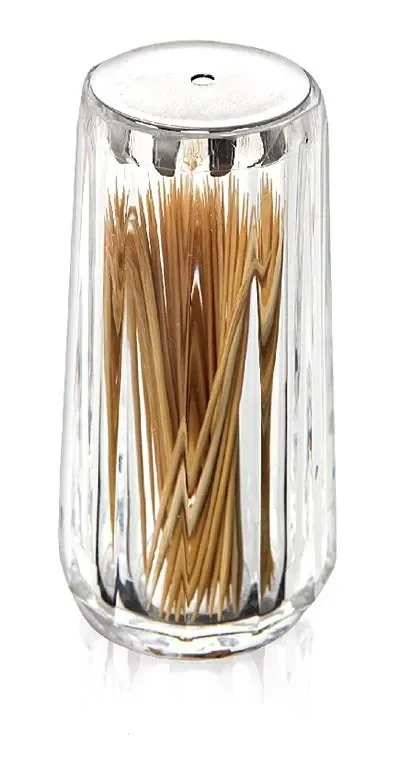
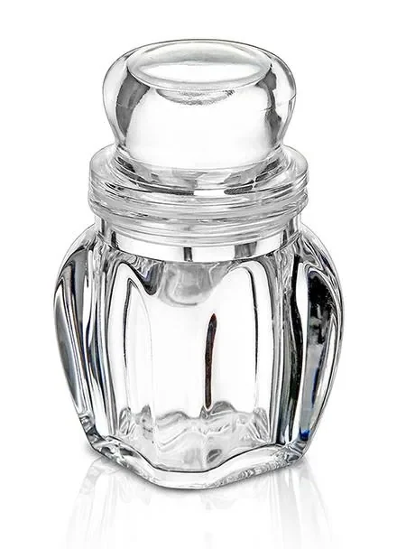
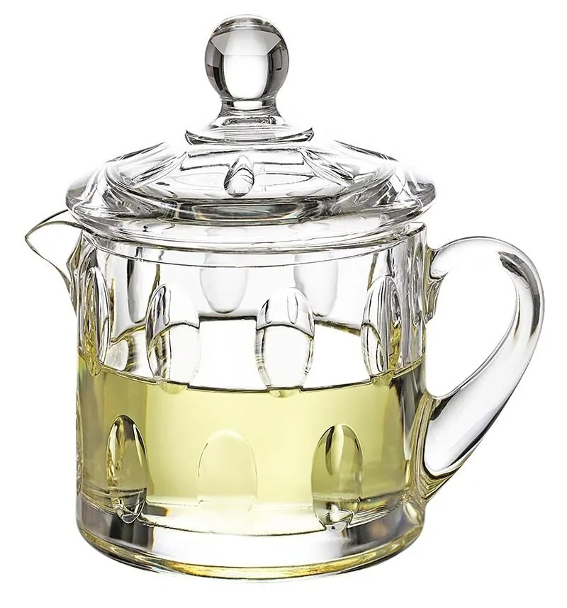
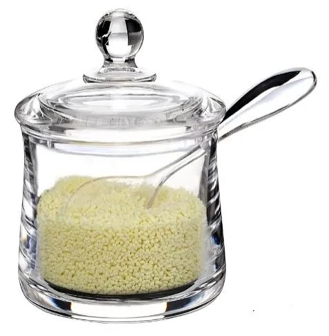
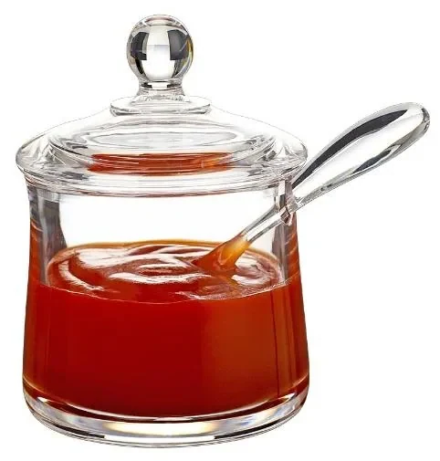
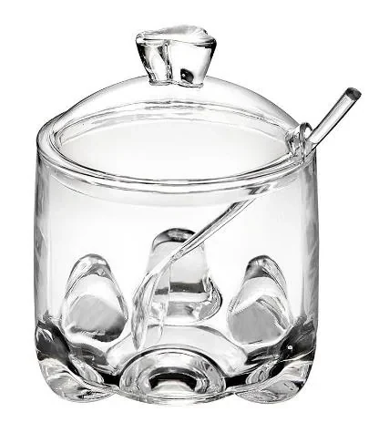
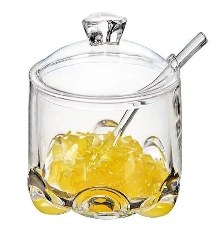
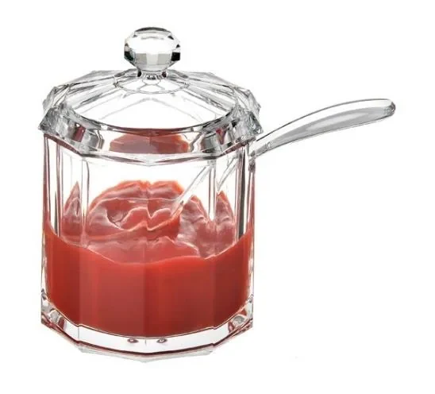
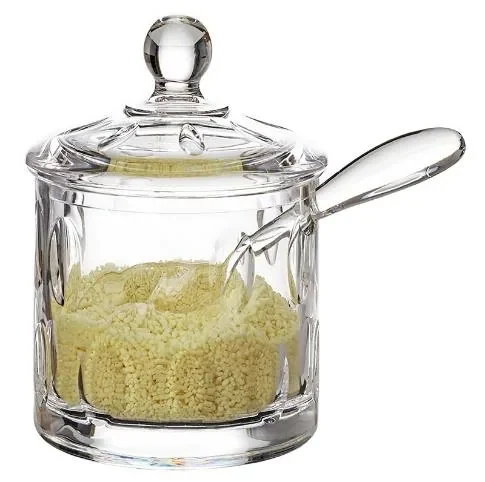
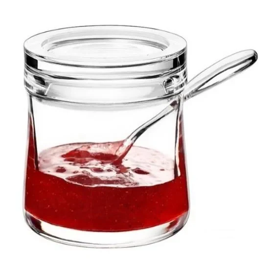

Wholesale acrylic spice jars and canisters, 80-250ml, with sealed lids, spoons and display stands. MOQ 500 sets, FDA food-grade material.
Individual jars for supermarket shelf packs and bulk refill programmes.
Three-jar and four-jar sets mounted on an acrylic stand or lazy Susan.
Graduated oil and vinegar bottles with drip-free spouts for the same aisle.
Looking for the full range? Browse the complete Acrylic Kitchen Storage gallery with model numbers and spec sheets.
10 models shown in this series — click any photo to enlarge. Full model list with dimensions available on request.










| Material | Food-grade PMMA / PET / PS acrylic |
| Capacity | 80ml - 250ml |
| Lid | Sifter, shaker, spoon or flip cap |
| Base | Acrylic stand, tray or lazy Susan |
| MOQ | 500 sets per design |
| Lead time | 30-45 days after sample approval |
| Certification | FDA food-grade, Prop 65 on request |
| Packing | Individual polybag + master carton |
Sifter caps, shaker caps and integrated spoons are tooling options. We send lid samples so you can check the flow before committing.
Laser marking, UV printing and sticker sleeve all work on acrylic. Barcodes and retail labels are applied before dispatch.
We assemble mixed jar sets with stands and inserts, then pack them into your retail carton.
All lines share the same BSCI audited production base, and we can consolidate several categories into one container. custom ceramic mugsstoneware tablewaredouble wall glass tumblersglass water glassesacrylic spice jarsacrylic kitchen organisers
Main ranges: ceramic mugs · glassware · kitchen storage · all products
Yes. We use food-grade PMMA or PET resin and can supply FDA food-contact and California Prop 65 reports.
Yes. The 500-set MOQ applies per configuration, and jars, lids and stands can be packed as a set under one order number.
Most 120ml and larger jars take an integrated spoon. For smaller jars we recommend an external spoon lid.
Each piece is individually bagged and separated, then boxed in double-wall cartons. Acrylic scratches easily, so separation is standard.
MOQ 500 pcs per design · 30-45 day production · FOB / CIF / DDP · reply within 24 hours